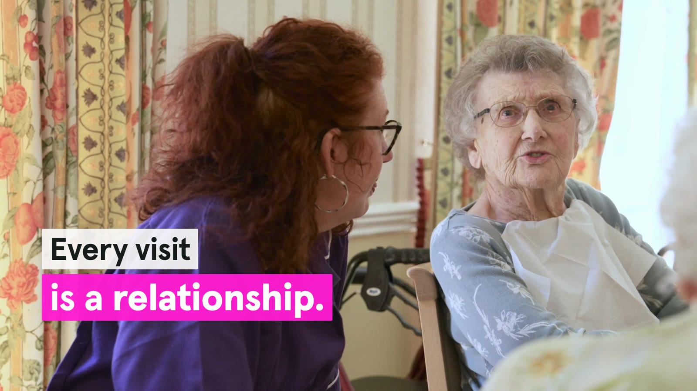
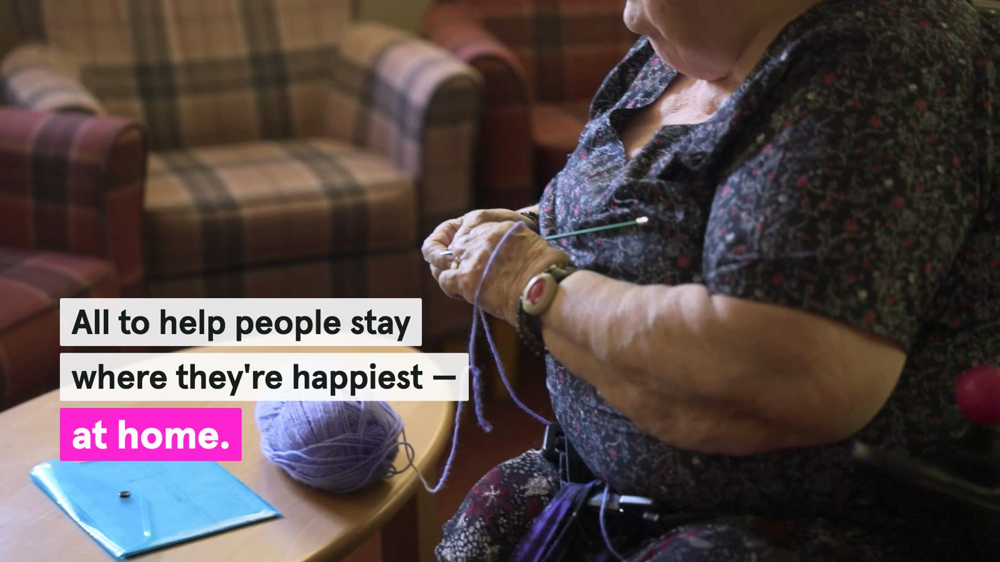
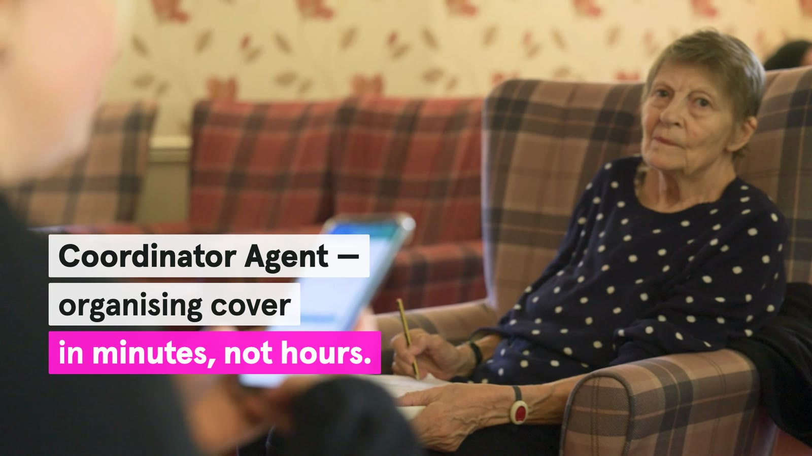
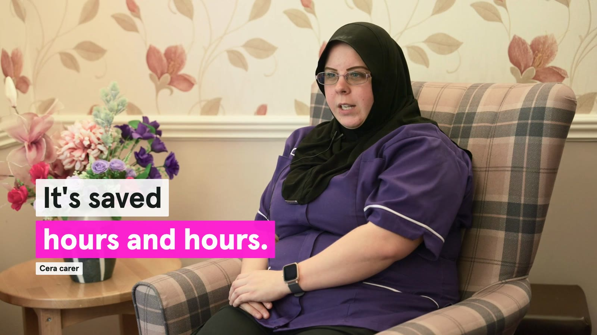

Spec project · LinkedIn video · Motion design
Cera Care: a LinkedIn video concept
Copywriting, video editing and motion design by Marcela Gregory · Built in Remotion
The idea
A concept LinkedIn video for Cera Care, the UK home care company, telling how its technology frees up carers' time for the people they look after.
My role
I wrote the on-screen copy, edited the footage and designed the motion graphics, working within Cera Care's brand guidelines for colour, type and layout.
The system
Short lines appear as modular blocks on white panels, with each key phrase on Cera Care's neon pink, all sharing one left-aligned grid and timed to the edit.



